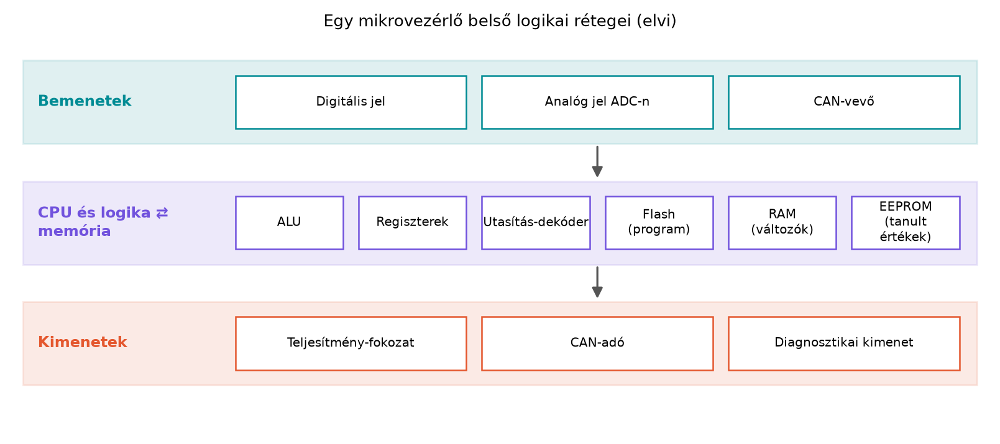

A diagnosztikai műszer élő adat nézete közben gyakran találkozol
ilyen értékekkel: a motorfordulatszám 0x0FA0, a
hűtőfolyadék-hőmérséklet nyers regiszterértéke 0x4B, a
CAN-üzenet azonosítója 0x1A5. A hibakódokat pedig
P0300 vagy C1201 alakban látod. Ahhoz, hogy
megértsd, mit „mond” a vezérlőegység, miért éppen 4000 1/min lesz a
0x0FA0 értékből, vagy miért gyanakszol szakadásra, ha a
hőmérséklet-nyersérték 0xFF, szükséged van a digitális
technika alapjaira: számrendszerekre, logikai függvényekre és tároló
áramkörökre. Ez az alfejezet ezt az alapot építi fel, hogy a későbbi
motorirányítási és adatbuszos fejezetekben ne idegen nyelvként találkozz
a kettes és tizenhatos számrendszerrel, amikor a munkahelyen hibakódot
fejtesz vagy CAN-üzenetet elemezel.
Képzelj el egy 8 bites regisztert a vezérlőegységben: nyolc apró
tárolócella egymás mellett, mindegyikben vagy 0, vagy
1 áll. A cellák fölé írjuk a helyiértékeket jobbról balra:
,
,
,
,
,
,
,
.
Ha a cellák tartalma 0000 1010, az emberi szemnek nehézkes,
de a vezérlő számára egyértelmű: a motorvezérlő egyetlen utasítással
tudja összeadni, eltolni vagy egy memóriacímhez rendelni. A
diagnosztikai műszer ezt az értéket rövidítve, 0x0A alakban
jeleníti meg. Ugyanez a gondolat vezet a logikai hálózatokig: a
digitális áramkörök nem feszültségértékekkel, hanem 0 és
1 állapotokkal dolgoznak; a vezérlőegység bemenetei,
kimenetei, belső regiszterei és kommunikációs üzenetei is ilyen
állapotokra vezethetők vissza.
Definíció. Analóg mennyiség olyan jel vagy fizikai mennyiség, amely adott tartományon belül folytonosan, elvileg tetszőleges közbenső értéket felvehet. Ilyen például a feszültség, a hőmérséklet, a nyomás vagy a fordulatszám mint fizikai folyamat.
Definíció. Digitális mennyiség
olyan jel, amely csak véges számú, jól elkülönített értéket vehet fel. A
járműelektronikában leggyakrabban két értéket használunk: 0
(logikai alacsony, low) és 1 (logikai magas, high). A
kettős logikát binárisnak nevezzük.
Definíció. A bit (binary digit) a
legkisebb információegység, értéke 0 vagy 1.
Nyolc bit alkot egy bájtot (byte), négy bit egy
nibble-t („félbájt”). A vezérlőegységek gyakran 8, 16
vagy 32 bites szavakban dolgoznak; egy 8 bites regiszter értékkészlete
különböző állapot, 0-tól 255-ig.
A hétköznapi életben a tízes (decimális) számrendszert használjuk: az alapszám 10, a helyiértékek . A digitális rendszerekben a kettes (bináris) számrendszer az alap: az alapszám 2, az egyes helyiértékek Tehát például
A hosszú bináris számok áttekinthetetlenek, ezért a
járműdiagnosztikában és a programozásban gyakran
hexadecimális (16-os alapú) számrendszert használunk.
Az alapszám 16, a számjegyek:
0, 1, 2, 3, 4, 5, 6, 7, 8, 9, A, B, C, D, E, F, ahol
A = 10, B = 11, …, F = 15. A
járműdiagnosztikai eszközök gyakran 0x előtaggal jelölik a
hexadecimális értéket, például 0x2F; a számjegyeket pedig
úgy írjuk, hogy 2F_{16}.
Szabály. Binárisból hexadecimálisra úgy váltunk,
hogy a bináris számot jobbról indulva négyes csoportokra osztjuk, és
minden csoportot egyetlen hexadecimális számjeggyé alakítunk. Hiányzó
bal oldali bitek helyére 0-t írunk.
Szabály. Decimálisból binárisba úgy váltunk, hogy a decimális számot ismételten kettővel osztjuk, a maradékokat feljegyezzük, majd a maradékokat az utolsótól az elsőig olvassuk. Decimálisból hexadecimálisba hasonlóan, 16-tal osztva járunk el.
Az alábbi táblázat a leggyakrabban használt 0–15 közötti értékeket mutatja.
| Decimális | Hexadecimális | Bináris |
|---|---|---|
| 0 | 0 | 0000 |
| 1 | 1 | 0001 |
| 2 | 2 | 0010 |
| 3 | 3 | 0011 |
| 4 | 4 | 0100 |
| 5 | 5 | 0101 |
| 6 | 6 | 0110 |
| 7 | 7 | 0111 |
| 8 | 8 | 1000 |
| 9 | 9 | 1001 |
| 10 | A | 1010 |
| 11 | B | 1011 |
| 12 | C | 1100 |
| 13 | D | 1101 |
| 14 | E | 1110 |
| 15 | F | 1111 |
Az értékek bináris és hexadecimális megfeleltetése matematikailag egyértelmű; ez nem igényel ellenőrzést.
Példa. Alakítsuk át a értéket binárisba és hexadecimálisba.
1. lépés – decimálisból binárisba osztással. A 234-et osztjuk 2-vel, és feljegyezzük a maradékokat:
A maradékokat alulról felfelé olvasva:
2. lépés – binárisból hexadecimálisba. A bináris számot jobbról négyes csoportokra bontjuk:
Tehát
Ellenőrzésként: , , így
Példa. Alakítsuk át a értéket decimálisba, majd binárisba.
A
hexadecimális jegy binárisan 0010, az
pedig 1111, ezért
A binárisból történő visszaellenőrzés: . A két eredmény egyezik.
Az ábrán a kitöltött cellák az 1-es bitek: a helyiértékek összege . A vastag vonal a nibble-határ: a felső négy bit , az alsó négy , így az érték . Az interaktív változatban a bitekre kattintva vagy értéket beírva gyakorolható az átváltás, és a nyers érték skálázása is kipróbálható (a 6. feladat adataival ).
Definíció. Logikai függvény olyan
leképezés, amelynek bemenetei és kimenete is logikai értékeket,
0-t vagy 1-t vehetnek fel. Például
azt jelenti, hogy az
kimenet a
,
,
bemenetek minden kombinációjához hozzárendeli a 0 vagy
1 értéket.
A három alapművelet:
1, ha minden bemenet
1.1, ha legalább egy bemenet 1.Ezekből épül fel a NAND
(),
a NOR
(),
a kizáró VAGY (XOR, exclusive OR) és a
XNOR. Az XOR akkor 1, ha a két bemenet
különböző:
Az alapkapuk igazságtáblája:
| A | B | AND () | OR () | XOR | NAND |
|---|---|---|---|---|---|
| 0 | 0 | 0 | 0 | 0 | 1 |
| 0 | 1 | 0 | 1 | 1 | 1 |
| 1 | 0 | 0 | 1 | 1 | 1 |
| 1 | 1 | 1 | 1 | 0 | 0 |
A logikai függvények egyszerűsítéséhez a Boole-algebra szabályait használjuk. A legfontosabb azonosságok:
Az utolsó két azonosságot De Morgan-törvényeknek nevezzük. A gyakorlatban a legegyszerűbb egyszerűsítési módszer a szorzatösszeg-alak (sum of products, SOP) felírása, majd a közös tényezők kiemelése. Ha a függvény bonyolult, Karnaugh-táblát használunk.
Példa. Legyen
Kiemeljük -t az első két tagból, illetve -t az utolsó kettőből:
Mivel és bármely logikai kifejezés szorozva 1-gyel önmaga,
A négytagú kifejezés tehát egyetlen bemenetre redukálódott. A Karnaugh-tábla ugyanezt grafikusan mutatja: ha az összes olyan cella, ahol , 1-es értéket tartalmaz, a függvény .
A Karnaugh-tábla lényege röviden: a bemeneti változókat úgy rendezzük
el a táblázat sor- és oszlopcímeiben, hogy a szomszédos cellák mindig
csak egyetlen változóban különbözzenek. A táblában kettes, négyes,
nyolcas stb. élével érintkező 1-es csoportokat keresünk, és
minden csoportból elhagyhatjuk azt a változót, amely a csoporton belül
0 és 1 értéket is felvesz. A
járműdiagnosztikában ritkán kell papíron Karnaugh-táblát rajzolnod, de a
módszer logikáját érdemes ismerned, mert a vezérlőegységek belső
feltételrendszerei ugyanígy egyszerűsödnek.
Definíció. Kombinációs hálózat olyan logikai áramkör, amelynek kimenete csak a bemenetek aktuális értékétől függ. Nincs benne tárolóelem; ha a bemenet megváltozik, a kimenet a kapuk késleltetése után követi a változást.
A kombinációs hálózatok fontos autóipari példái:
A az összeg, a az átvitel. Teljes összeadó már a bejövő átvitelt is figyelembe veszi, és ezekből építhető fel a mikrovezérlő aritmetikai-logikai egysége (ALU).
Definíció. Szekvenciális hálózat olyan logikai áramkör, amelynek kimenete nemcsak a bemenetek aktuális értékétől, hanem a korábbi állapotoktól is függ. Ehhez tárolóelemeket, leggyakrabban flip-flopokat használ. A szekvenciális hálózatok képesek állapotot megjegyezni.
A járműelektronikában a legfontosabb szekvenciális elemek:
000, 001,
010, 011, 100, 101,
110, 111, majd újraindul. A számláló
frekvenciaosztásra, időzítésre és eseményszámlálásra is alkalmas.A soros adatátvitelben, például a CAN- vagy LIN-üzeneteknél, a bitek időben egymás után érkeznek. A vevő egy shift regiszterben gyűjti a biteket, majd amikor a teljes üzenet összeállt, a tartalmat egy párhuzamos regiszterbe másolja. Ez a soros-párhuzamos átalakítás a digitális járműhálózatok egyik alapművelete.
A mai motorvezérlő (ECU) lényegében egy beágyazott mikrovezérlő, amely kombinációs logikát, regisztereket, számlálókat, időzítőket, memóriát és analóg-digitális átalakítókat (ADC) tartalmaz. A mikrovezérlő nem rögzített kapukból, hanem programozható logikai egységekből épül, így ugyanaz a hardver különböző szoftverekkel más-más járműtípus feladatát is elláthatja.

A rétegábra azt mutatja, hogy a bemeneti jelek az ADC-n vagy a digitális bemeneteken keresztül jutnak a CPU-ba, ahol az ALU aritmetikai és logikai műveleteket végez, a regiszterek átmeneti adatokat tárolnak, a flash memória a programot, a RAM a változókat, az EEPROM pedig a tanult értékeket és hibakódokat őrzi. A kimeneti fokozatok ezután a beavatkozókat, például injektorokat, gyújtótekercset vagy CAN-adót vezérlik.
Ez a felépítés azért fontos, mert a későbbi motorirányítási alfejezetben már adottnak vesszük, hogy az ECU „elolvassa” a fordulatszám-jeladót, regiszterben tárolja a motorhőmérsékletet, és logikai feltételekkel dönt például arról, hogy az alapjárat-szabályozó melyik állásba lépjen. A bináris és hexadecimális ábrázolást pedig közvetlenül használjuk majd a(z) A motorirányítás alapjai: vezérlőegység, szabályozási kör, üzemállapotok és rendszerek és az Adatbusz-hálózatok: CAN, LIN, FlexRay, MOST és Ethernet alfejezetben.
Továbbvitt eredmény. A bináris, decimális és
hexadecimális átváltás, a bit/bájt fogalom, valamint a regiszterben
tárolt adatok olvasása és léptetése szükséges a motorvezérlő belső
működésének (A motorirányítás alapjai:
vezérlőegység, szabályozási kör, üzemállapotok és rendszerek) és a
CAN/LIN-üzenetek értelmezésének (Adatbusz-hálózatok: CAN, LIN, FlexRay, MOST és
Ethernet) megértéséhez. Aki itt megtanulja, hogy 0x0F =
15, 0x10 = 16, 0xFF = 255, az a diagnosztikai
műszer nyers adatainál már pontosan tudja, milyen tartományba esik a
mért érték.
A számrendszeres átváltásokat mindig ellenőrizzük vissza egy másik
irányból. Ha például 0x3C-t decimálissá alakítunk,
.
A bináris érték 0011 1100, amiből a helyiértékekkel
számolva szintén
adódik. Ha a két út nem egyezik, hibát vétettünk a csoportosításban vagy
a helyiértékekben.
A logikai egyszerűsítést úgy ellenőrizzük, hogy az eredeti kifejezést
és az egyszerűsített kifejezést minden bemeneti kombinációra
kiértékeljük. Például az előző
egyszerűsítésnél
esetén az eredeti kifejezés minden tagja 0,
esetén pedig minden lehetséges
és
kombinációra az egyik tag 1-et ad. Ha bármelyik sor eltér,
az egyszerűsítés hibás.
Az ECU-ban tárolt nyers regiszterértékek minőségét is ellenőrizni kell. A gyártói diagnosztikai adat megadja, hogy egy adott jel hány bites, milyen skálázású, és van-e hozzá hibahatár. A mért nyersértéket ezzel összevetve dönthető el, hogy az érték életszerű-e, vagy jeladóhibára, szakadásra, rövidzárlatra utal. Az ilyen értékek mindig tanulási példák, a konkrét járműhöz a gyártói javítási adat az irányadó.
Egy ügyfél azzal hozza a járművét, hogy a
hűtőfolyadék-hőmérséklet-mutató időnként a maximumra ugrik, majd
visszaáll, és a motorellenőrző lámpa is kigyulladt. A szerelő
csatlakoztatja a diagnosztikai műszert, és kiolvassa az élő adatokat. A
hűtőfolyadék-hőmérséklet nyers regiszterértéke a műszeren
0xFF-ként jelenik meg.
A szerelő tudja, hogy az adott vezérlő 8 bites regiszterben tárolja az érzékelő értékét, és a példaként vett skálázás szerint 1 bit = 1 °C, az érték pedig -40 °C eltolással értendő (ellenőrizendő: gyártói diagnosztikai adat). Kiszámolja:
Ez fizikailag irreális hűtőfolyadék-hőmérséklet (a 0xFF
a 8 bites tartomány teteje), ezért az érték nem valós mérést, hanem
hibát jelez: a vezérlő az ilyen tartományon kívüli értéket hibajelként
kezeli. A hibát az érzékelőkör zárlata vagy szakadása okozhatja, ezért a
gyártói hibakód és az érzékelő ellenállásának mérése dönt
(ellenőrizendő: gyártói adat). A szerelő ellenőrzi a
hőmérséklet-érzékelő csatlakozóját, ahol oxidációt talál. A csatlakozó
tisztítása és a hiba törlése után a nyersérték visszaáll
0x7D-re, ami
-ot
mutat, és üzemmeleg motornál reális. A tanulság: a nyers digitális
értékekből azonnal látható, ha a jel a mérési tartomány szélére ragadt.
(A nyers kód és a skálázott hőmérséklet két külön mennyiség: a szenzor
az NTC-termisztor feszültségét méri, amely nem lineáris a
hőmérséklettel, a vezérlő pedig ebből számítja a regiszterbe kerülő,
skálázott értéket.)
1. A hexadecimális számot decimálisnak nézik. A
0x10 nem 10, hanem
.
A műszerfalon vagy a CAN-naplóban szereplő 0x10 tehát nem
azt jelenti, hogy a készülék tízes értéket mért. Ezt a hibát
legkönnyebben úgy kerülheted el, hogy a 0x előtagot mindig
„hexadecimális” figyelmeztetésként olvasod.
2. A bit súlyozását balról kezdik. A értéket néha -nek számolják, ami hibás. A helyiértékek jobbról balra nőnek: . A hiba gyakran abból adódik, hogy a számot szövegként, nem helyiérték-rendszerként kezelik.
3. A Karnaugh-csoportosításnál nem szomszédos cellákat vonnak össze. Csak olyan cellák vonhatók össze, amelyek élével érintkeznek, vagy a tábla szélei a ciklikus elrendezés miatt összeérnek. Ha nem szomszédos cellákat foglalnak csoportba, az egyszerűsített kifejezés hibás lesz.
4. A logikai állapotot összekeverik a
feszültségszinttel. A digitális 0 és
1 nem feltétlenül 0 V és 12 V. A vezérlőegységekben
jellemzően 5 V, 3,3 V vagy más logikai szintek vannak. A gyakorlatban
mindig a gyártói kapcsolási rajz és a javítási útmutató adja meg, milyen
feszültség tartozik az adott logikai szinthez.
0x1A decimális értéke 26? Indokold.200 decimális érték hexadecimálisan? Számítsd
ki.1, ha mindkét
bemenete 1?0xFF, ha a skála 1 bit = 1 °C, az eltolás pedig -40
°C?1. feladat (A) Alakítsd át a értéket bináris és hexadecimális számrendszerbe. Ellenőrizd is az eredményt.
2. feladat (A) Írd fel a NAND kapu igazságtábláját, és fejezd ki a függvényt és logikai változókkal.
3. feladat (B) Tervezz olyan 3 bemenetű logikai
függvényt, amelynek kimenete akkor 1, ha a bemenetek közül
legalább kettő 1 (többségi döntés). Írd fel a
szorzatösszeg-alakot, és egyszerűsítsd Boole-algebrai lépésekkel.
4. feladat (B) Rajzold fel egy félösszeadó
kapcsolási vázlatát XOR és AND kapukból, és
írd fel az igazságtábláját. Milyen autóipari feladatnál hasznos az ilyen
aritmetikai logika?
5. feladat (C) Hasonlítsd össze a multiplexer és a demultiplexer feladatát. Hol használhatná egy ECU a multiplexert a bemeneti jelek számának csökkentésére? Gondolj például több kapcsoló vagy több hőmérsékletjel egyetlen vezérlőegység-lábra való bekötésére.
6. feladat (D) A diagnosztikai műszer a
hűtőfolyadék-hőmérséklet 8 bites nyers regiszterében 0x56
értéket mutat. A gyártói skálázás példaként: 1 bit = 1 °C, eltolás -40
°C (ellenőrizendő: gyártói adat). Számítsd ki a
hőmérsékletet. Miért gyanús, ha a nyersérték 0xFF?
C8. Ellenőrzés:
.0, mert az
ÉS kimenetének negáltját adja.0xFF = 255, az átszámítva
lenne, ami hűtőfolyadék esetén irreális. Az ilyen szélső érték általában
szakadásra vagy rövidzárlatra utal.1. feladat (A) A 101-et osztjuk 2-vel:
A maradékokat visszafelé olvasva: 110 0101.
Hexadecimálisan négyes csoportokban: 0110 0101 =
65. Ellenőrzés:
.
2. feladat (A) A NAND kapu igazságtáblája:
| A | B | NAND |
|---|---|---|
| 0 | 0 | 1 |
| 0 | 1 | 1 |
| 1 | 0 | 1 |
| 1 | 1 | 0 |
A függvény: .
3. feladat (B) A háromból legalább kettő szabály
miatt a kimenet 1, ha
és
,
vagy
és
,
vagy
és
egyidejűleg 1. A szorzatösszeg-alak:
Egyszerűsítés:
Mivel mindegyik zárójeles összeg 1,
Ellenőrzésként: ha
,
,
,
akkor
,
tehát a kimenet 1, és az eredeti tagok közül
szintén 1. A többi bemeneti kombinációra is egyezik.
4. feladat (B) A félösszeadó vázlata: az és bemenet egyaránt egy XOR kapura és egy AND kapura megy. Az XOR kimenete az összeg, ; az AND kimenete az átvitel, . Igazságtáblája:
| A | B | S | C_ki |
|---|---|---|---|
| 0 | 0 | 0 | 0 |
| 0 | 1 | 1 | 0 |
| 1 | 0 | 1 | 0 |
| 1 | 1 | 0 | 1 |
Az autóiparban az ilyen aritmetikai logika az ECU ALU-jában fut, amikor összeadja a befecskendezési idő korrekcióit, vagy számolja a kerékfordulatszám-jeladó impulzusainak futó összegét.
5. feladat (C) A multiplexer sok bemenő jelből választ egyet, és azt vezeti a kimenetre; a demultiplexer egyetlen bemenő jelet oszt szét több kimenetre. Egy ECU például több kapcsoló állapotát egyetlen többbemenetű multiplexerre kötheti. A mikrovezérlő a vezérlőbemenetekkel végigméri a kapcsolókat, így kevesebb bemeneti lábat használ. Ez egyszerűbb bekötést és kevesebb vezetéket eredményez.
6. feladat (D) A 0x56 hexadecimális
érték decimálisan:
A hőmérséklet:
Ha a nyersérték 0xFF = 255 lenne, akkor a hőmérséklet
lenne, ami fizikailag lehetetlen hűtőfolyadéknál. Ez szakadásra vagy
rövidzárlatra utal, ezért a műszeres mérést az érzékelő csatlakozóján és
bekötésén kell folytatni.
A digitális rendszerekben az analóg, folytonos jeleket véges
állapotú, bináris értékekkel ábrázoljuk. A bit a legkisebb
információegység, nyolc bit egy bájt. A bináris, decimális és
hexadecimális számrendszer között helyiértékekkel váltunk; binárisból
hexadecimálisra jobbról négyes csoportokra bontva, decimálisból
binárisba ismételt osztással. A logikai függvények a 0 és
1 értékeken működnek; az ÉS, VAGY, NEM, NAND, XOR műveletek
segítségével egyszerűsíthetők, például
.
A kombinációs hálózatok csak az aktuális bemenetektől függenek, a
szekvenciális hálózatok tárolóelemekkel rendelkeznek. A regiszterek,
shift regiszterek és számlálók a vezérlőegységek belső adatkezelésének
alapjai. A mikrovezérlő programozható logikája fogadja a digitális és
analóg jeleket, regiszterekben tárolja az értékeket, és a beavatkozókat
vezérli. Továbbvitt eredmény: a bináris és
hexadecimális ábrázolás, valamint a regiszterfogalom közvetlenül
szükséges a motorirányítás és az adatbusz-hálózatok tárgyalásához, mert
ott a CAN-üzenetek és a diagnosztikai nyersértékek ugyanilyen formában
jelennek meg.
A számrendszerek, a Boole-algebra, a kapuk és a regiszterek leírása a
digitális elektronika stabil tankönyvi alapanyaga, nem igényel külön
forrásellenőrzést. A járműipari diagnosztikai gyakorlatban használt
konkrét skálázások, nyersérték-tartományok és OBD- vagy CAN-jellemzők
gyártói, illetve szabványos adatok, ezért ellenőrizendők. A szövegben
használt hőmérséklet-skálázás (1 bit = 1 °C, eltolás
-40 °C) tanulási példa, a tényleges értéket a gyártói
diagnosztikai adat határozza meg. Az OBD-hibakódok és a CAN-azonosítók
részletes rendszerét a későbbi, fedélzeti diagnosztikát és
adatbusz-hálózatokat tárgyaló alfejezetek mutatják be; az ott megadott
szabvány- és előírásszámok a kiadás előtt ellenőrizendők.